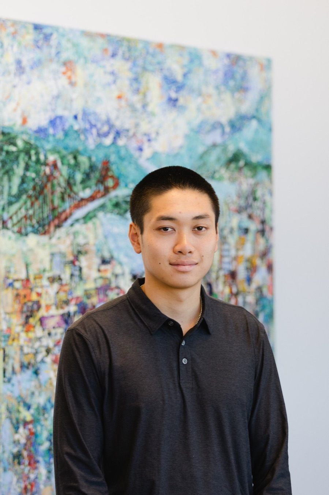

Hi, I'm Ben Vu.
Junior at Stanford from San Diego, CA, working toward a career in finance with a focus on sustainability.
- Finance
- Sustainability
- Clean transportation
About
I'm a junior at Stanford studying Science, Technology & Society and Earth Systems. I grew up in San Diego, and I care about how capital and good business strategy can speed up the shift to a more sustainable economy. I want to build a career in finance and bring that perspective with me.
Outside of class I lead consulting projects for local nonprofits, work on sustainable transportation for students, and spend time on the court as a practice player for Stanford Women's Basketball.
Experience
Built a national site-suitability model for heavy-duty EV charging that scored all 48 contiguous states on freight traffic, warehouse density, and grid access, producing 1,173 candidate sites. Extended it to the robotaxi market across the 36 largest U.S. metros, sizing demand at roughly 184 charging depots.
Lead teams of 4–5 consultants delivering pro bono strategy work for small businesses and nonprofits, serving as the primary client liaison.
Organize sustainable travel options for students during academic breaks, including campus shuttles and discounted Caltrain tickets.
Writing
A cultural diary and travel blog from my quarter abroad in Australia: ten entries on history, Country, the coast, food, and mateship.